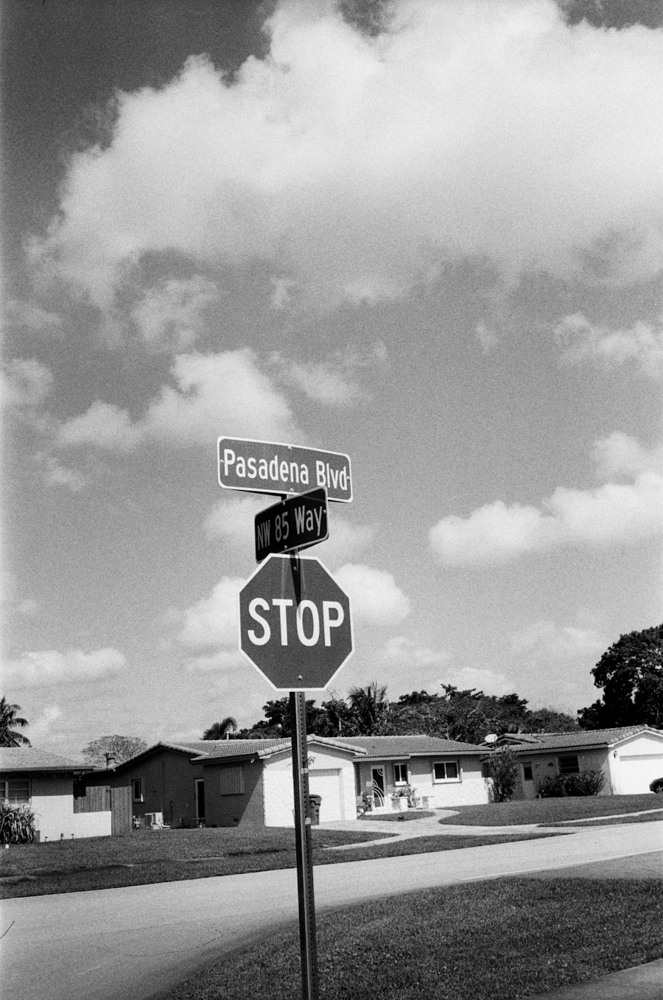
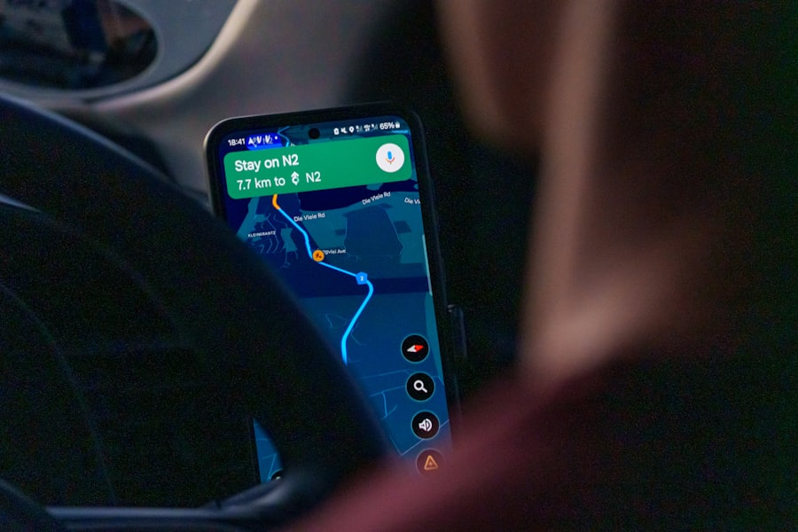

Today means today
Submit by 2pm and a licensed Florida process server attempts service before the day ends.
Send your documents by 2pm and a licensed Florida process server attempts service the same day — in Orlando, Tampa, Miami, Jacksonville and every major metro across the state.
Submit by 2pm and a licensed Florida process server attempts service before the day ends.
Same-day attempts run into the evening — often the best time to reach a defendant at home.
Same-day service in Orlando, Tampa, Miami, Jacksonville, St. Petersburg, Fort Lauderdale and every major Florida market.
Completed serves are documented the same night; your notarized return of service follows the next morning.
Some documents simply can't wait for tomorrow: emergency injunctions, eviction notices on strict statutory clocks, and subpoenas for imminent hearings. Our same-day process serving exists for exactly those moments — and it's available across Florida's busiest counties, from Hillsborough and Pinellas to Orange, Miami-Dade, Duval, Broward and Palm Beach.
Send your documents by 2pm and a licensed process server attempts service that same calendar day. Because evening hours are often the most productive window for residential serves in Florida, same-day jobs frequently complete on the very first attempt — putting court-ready proof back in your hands quickly.
Outside major metros or after the cutoff, we tell you honestly what's realistic — usually a first attempt early the next morning under our rush process serving. Every attempt is GPS-verified and documented for a clean, court-compliant record.


Most failed serves fail for one reason: the attempt happens when nobody's home. Same-day dispatch pushes attempts into the after-work window across Florida's metros, when contact rates are at their highest.
That scheduling advantage — combined with GPS-verified documentation on every visit — is why our same-day jobs so often finish on the first attempt and produce a clean, court-ready return of service.
Flexible on the day but tight on the week? See Rush Process Serving →
2pm local time for same-day attempts in major Florida metros. Documents received later are attempted first thing the next morning under our rush service.
We offer same-day service across major metro counties — Hillsborough, Miami-Dade, Orange, Duval, Pinellas, Broward, Palm Beach and more. In rural and outlying counties we quote realistic same- or next-day timing before you commit. All told, we cover every one of Florida's 67 counties.
Yes. Under Florida Statutes Chapter 48, service may be attempted any day except Sunday (and legal holidays for certain documents). We routinely serve evenings and Saturdays throughout Florida to catch defendants at home.
A completion notice with GPS and time details the same evening, followed by the notarized affidavit and return of service — typically delivered the next business morning and ready to file with the court.
Same-day and rush service carry a priority fee above standard routine service because a local server is dispatched immediately. Pricing depends on the metro, the service address and the urgency. Call (407) 697-4530 or request service online and we'll quote your same-day job before you commit — no surprises.
Yes. Evasive and hard-to-locate defendants are a core part of our work. Same-day evening attempts, combined with skip tracing when an address is stale, give us the best shot at completing difficult serves quickly — and, where the statute allows, we can pursue substitute service to keep your case moving.
Upload your documents now and a Florida process server is dispatched this afternoon.